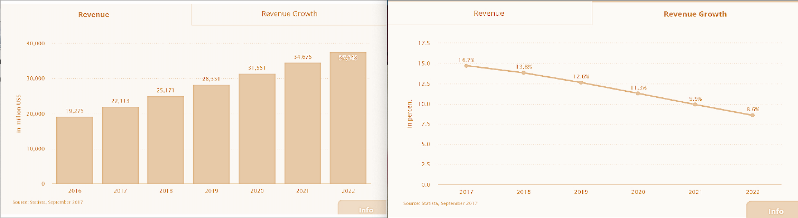
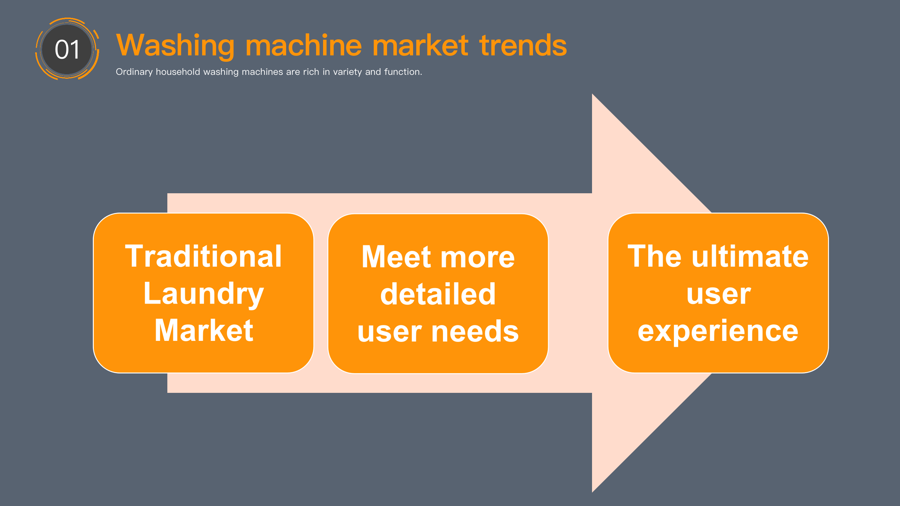
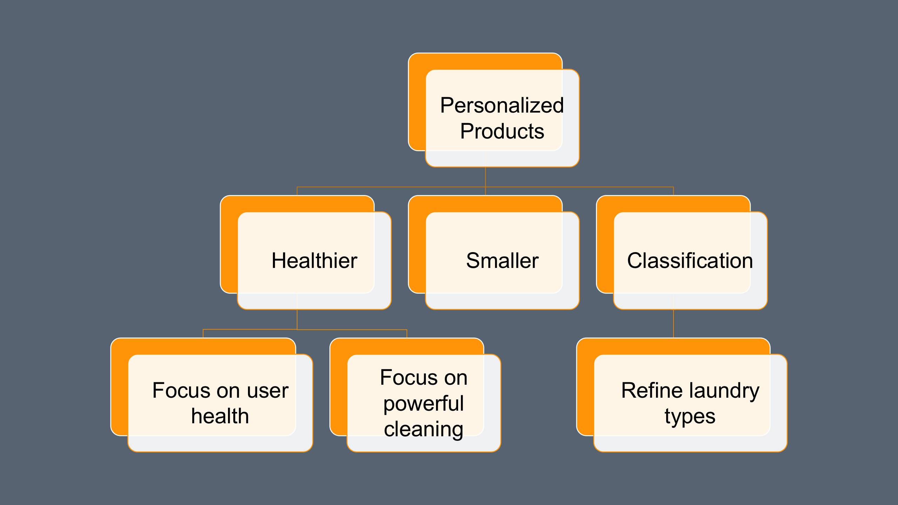
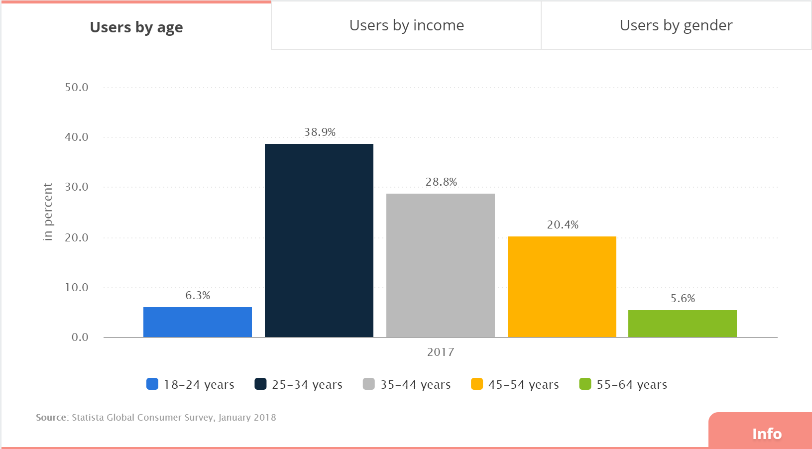
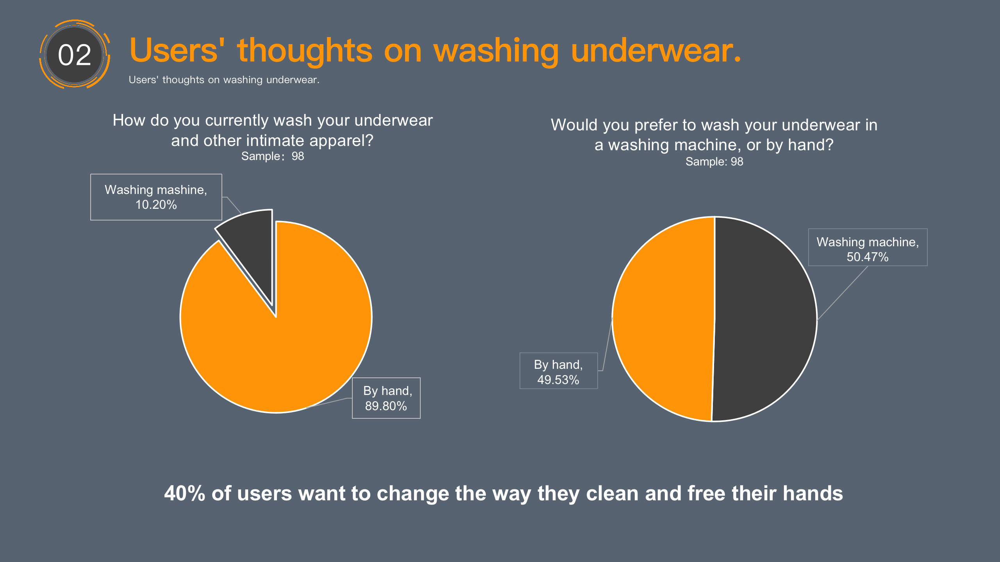
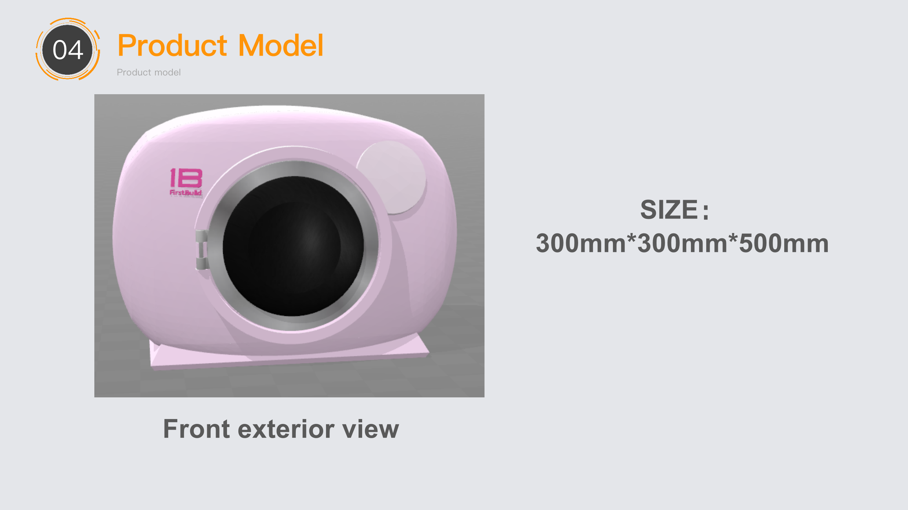
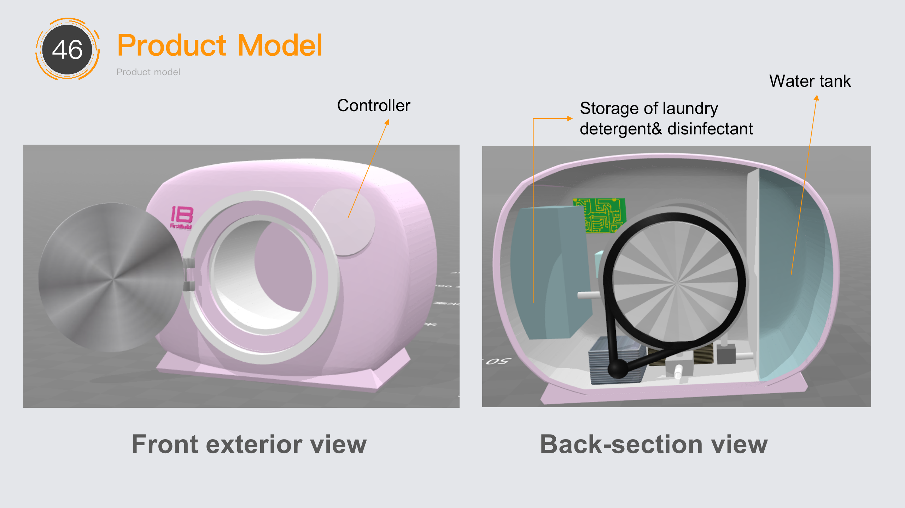
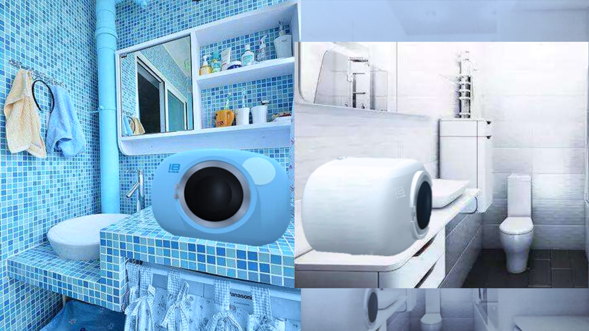

INNOLAB
KEY WORDS
TEAM MEMBERS
Eva: Product Design/ UX Design
Jiefeng Long: Modeling
Min Zhou: Finanical analyzing
Introduction
Underwear washing is one of those things in life that is easily taken lightly. In fact, it is a vital part of ensuring personal hygiene. Due to uncleanliness in private areas, 59% of women are victims of cervicitis, and various vaginitis endangers 32% of women. And skin eczema, prostate inflammation and urethral inflammation are all related to improper underwear cleaning. We found that many people are reluctant to use a washing machine to wash underwear and ordinary clothes together in our daily lives, while washing by hand is troublesome. Therefore, this project hopes to design a product to help users wash their underwear more conveniently.
Product Design
Market Analysis
The Chinese home appliance market is gaining prominence, but the growth rate is expected to slow down. Meaning the market is gradually becoming saturated.
The demand for the segmented category of washing machines is generally stable—January to June 2017 retail sales volume of 17.89 million units, up 8.2% year-on-year. Retail sales increased by 10.3% Cumulative year-on-year production increased by 3.55%. Ordinary household washing machines can cover the basic needs of users. Therefore washing machines are developing in the direction of personalization. Healthier, smaller, more detailed classification has become the mainstream trend of washing machine development.
 Our users
We found a gap in the washing machine consumer market for the college student age group of 18-24.
In order to explore the user needs of this group, we released a questionnaire and collected a total of 107 valid samples. We found that most college students live in schools and do not have independent washing and drying facilities, so they have more robust demand for underwear cleaning. Therefore, we selected college students as our target users. At the same time, we found that their demand for lingerie cleaning is small electricity consumption, smaller size and lower price. But the cleaning function can only reach the sterilization function.

Point-Of-View STATEMENT
How to design an underwear washing machine with low power consumption, small size and cheap price to meet the needs of college students washing their underwear.
Product Modeling
  Finanical analysis
Cost analysis
Case assembly - ¥65, inner barrel module - ¥33, circuit control - ¥34, motor - ¥46, accessories - 5. Total ¥183. The cost per unit is the base cost + production cost + sales cost is about ¥183/0.75/0.7 = ¥348.
Sale Modeling
There are 18.601 million college students who earn more than 1,000 yuan. The percentage of college students who think it is troublesome to wash underwear and other intimate clothing is 49.53%. Therefore the total number of users is 9.213 million. The sales strategy for the first year was to get more user feedback and further iterate the product while reducing unnecessary promotional expenses and sales costs. We chose to use social networks and online shopping platforms to sell.